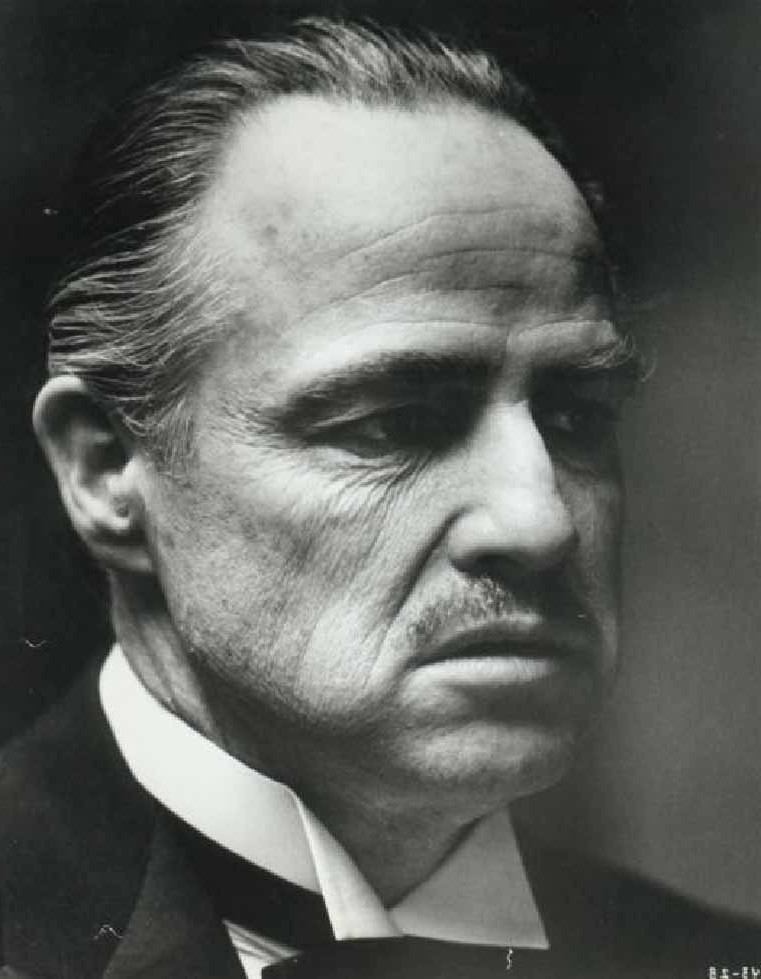

Legendary screen presence Marlon Brando performed
for more than 50 years and is famous for such films
as A Streetcar Named Desire and The Godfather.
Synopsis
Marlon Brando was born April 3, 1924, in Omaha,
Nebraska. After early promise in the 1940s and
'50s, including a legendary performance in the
film version of A Streetcar Named Desire,
Brando's film career had more downs than up
until his starring role in The Godfather. Later
, he received huge salaries for small parts. He
became known for self-indulgence but was always
respected for his finest work.
Early Broadway Roles
Actor Marlon Brando was born on April 3, 1924, in
Omaha, Nebraska. Brando grew up in Illinois, and
after expulsion from a military academy, he dug
ditches until his father offered to finance his
education. Brando moved to New York to study with
acting coach Stella Adler and at Lee Strasberg's
Actors' Studio. Adler has often been credited as
the principal inspiration in Brando's early career,
and with opening the actor to great works of
literature, music and theater.
While at the Actors' Studio, Brando adopted the
"method approach," which emphasizes characters'
motivations for actions. He made his Broadway
debut in John Van Druten's sentimental I Remember
Mama (1944). New York theater critics voted him
Broadway's Most Promising Actor for his performance
in Truckline Caf (1946). In 1947, he played his
greatest stage role, Stanley Kowalski -- the brute
who rapes his sister-in-law, the fragile Blanche du
Bois in Tennessee Williams' A Streetcar Named Desire.

Hollywood Bad Boy
Hollywood beckoned to Brando, and he made his motion
picture debut as a paraplegic World War II veteran
in The Men (1950). Although he did not cooperate
with the Hollywood publicity machine, he went on to
play Kowalski in the 1951 film version of A
Streetcar Named Desire, a popular and critical
success that earned four Academy Awards.
Brando's next movie, Viva Zapata! (1952), with a
script by John Steinbeck, traces Emiliano Zapata's
rise from peasant to revolutionary. Brando followed
that with Julius Caesar and then The Wild One (1954)
,in which he played a motorcycle-gang leader in all
his leather-jacketed glory. Next came his Academy
Award-winning role as a longshoreman fighting the
system in On the Waterfront, a hard-hitting look at
New York City labor unions.
During the rest of the decade, Brando's screen roles
ranged from Napoleon Bonaparte in Désirée (1954),
to Sky Masterson in 1955's Guys and Dolls, in which
he sang and danced, to a Nazi soldier in The Young
Lions (1958). From 1955 to 1958, movie exhibitors
voted him one of the top 10 box-office draws in the
nation.
During the 1960s, however, his career had more downs
than ups, especially after the MGM studio's
disastrous 1962 remake of Mutiny on the Bounty,
which failed to recoup even half of its enormous
budget. Brando portrayed Fletcher Christian, Clark
Gable's role in the 1935 original. Brando's
excessive self-indulgence reached a pinnacle during
the filming of this movie. He was criticized for his
on-set tantrums and for trying to alter the script.
Off the set, he had numerous affairs, ate too much,
and distanced himself from the cast and crew. His
contract for making the movie included $5,000 for
every day the film went over its original schedule.
He made $1.25 million when all was said and done.
'The Godfather'
Brando's career was reborn in 1972 with his
depiction of Mafia chieftain Don Corleone in Francis
Ford Coppola's The Godfather, a role for which he
received the Academy Award for Best Actor. He turned
down the Oscar, however, in protest of Hollywood's
treatment of Native Americans. Brando himself did
not appear at the awards show. Instead, he sent a
Native American Apache named Sacheen Littlefeather
(who was later determined to be an actress
portraying a Native American) to decline the award
on his behalf.
Later Roles
Brando proceeded the following year to the highly
controversial yet highly acclaimed Last Tango in
Paris, which was rated X. Since then, Brando has
received huge salaries for playing small parts in
such movies as Superman (1978) and Apocalypse Now
(1979). Nominated for an Academy Award for Best
Supporting Actor for A Dry White Season in 1989,
Brando also appeared in the comedy The Freshman with
Matthew Broderick.
In 1995, Brando costarred in Don Juan DeMarco with
Johnny Depp. In early 1996, Brando costarred in the
poorly received The Island of Dr. Moreau.
Entertainment Weekly reported that the actor was
using an earpiece to remember his lines. His costar
in the film, David Thewlis, told the magazine that
Brando nonetheless impressed him. "When he walks
into a room," Thewlis noted, "you know he's around."
In 2001, Brando starred as an aging jewel thief in
pursuit of one last payoff in The Score, also
starring Robert De Niro, Edward Norton, and Angela
Bassett.
Personal Life
It has been observed that Brando has perhaps loved
food and womanizing too much. His best acting
performances are roles that required him to show a
constrained and displayed rage and suffering. His
own rage may have come from parents who did not care
about him.
Time magazine reported, "Brando had a stern, cold
father and a dream-disheveled mother- both
alcoholics, both sexually promiscuous-and he
encompassed both their natures without resolving the
conflict." Brando himself wrote in his autobiography,
"If my father were alive today, I don't know what I
would do. After he died, I used to think, 'God, just
give him to me alive for eight seconds because I
want to break his jaw.'"
Although Brando avoids speaking in detail about his
marriages, even in his autobiography, it is known
that he has been married three times to three
ex-actresses. He has at least 11 children. Five of
the children are with his three wives, three are
with his Guatemalan housekeeper, and the other three
children are from affairs. One of Brando's sons,
Christian Brando, told People magazine, "The family
kept changing shape. I'd sit down at the breakfast
table and say, 'Who are you?'"
In 1991, Christian was convicted of voluntary
manslaughter in the death of his sister's fiancee,
Dag Drollet, and received a 10-year sentence. He
claimed Drollet was physically abusing his pregnant
sister, Cheyenne. Christian said he struggled with
Drollet and accidentally shot him in the face.
Brando, in the house at the time, gave
mouth-to-mouth resuscitation to Drollet and called
911. At Christian's trial, People reported one of
Brando's comments on the witness stand, "I tried to
be a good father. I did the best I could."
Brando's daughter, Cheyenne, was a troubled young
woman. In and out of drug rehabilitation centers and
mental hospitals for much of her life, she lived in
Tahiti with her mother Tarita (one of Brando's wives,
whom he met on the set of Mutiny on the Bounty).
People reported in 1990 that Cheyenne said of Brando,
"I have come to despise my father for the way he
ignored me as a child."
After Drollet's death, Cheyenne became even more
reclusive and depressed. A judge ruled that she was
too depressed to raise her child and gave custody of
the boy to her mother, Tarita. Cheyenne took a leave
from a mental hospital on Easter Sunday in 1995 to
visit her family. At her mother's home that day,
Cheyenne, who had attempted suicide before, hanged
herself.
Death and Legacy
Brando's years of self-indulgence are visible, as he
weighed well over 300 pounds in the mid-1990s. The
actor died of pulmonary fibrosis in a Los Angeles
hospital in 2004 at the age of 80. But to judge
Brando by his appearance and dismiss his work
because of his later, less significant acting jobs,
however, would be a mistake. His performance in A
Streetcar Named Desire brought audiences to their
knees, and his range of roles is a testament to his
capability to explore many aspects of the human
psyche.